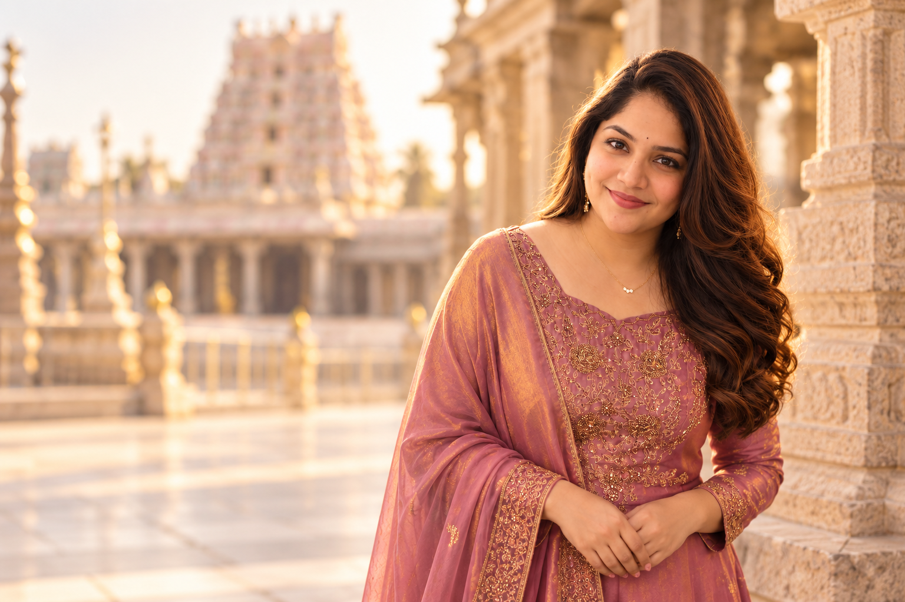
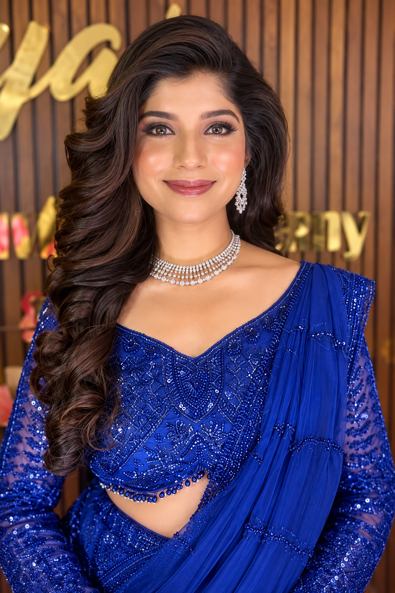
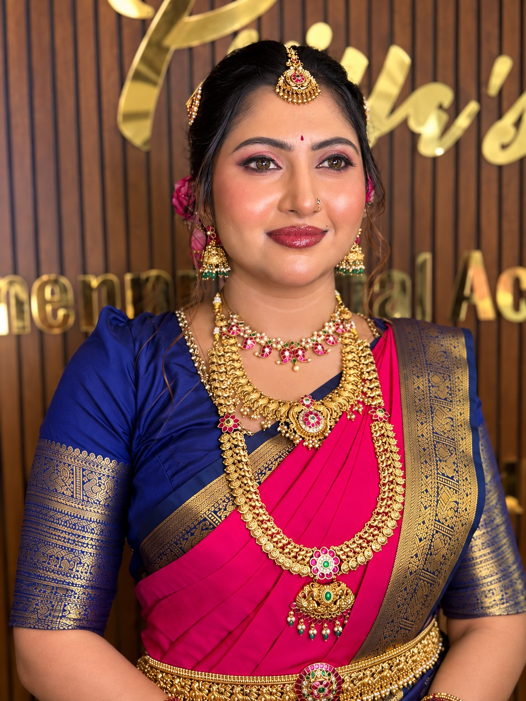
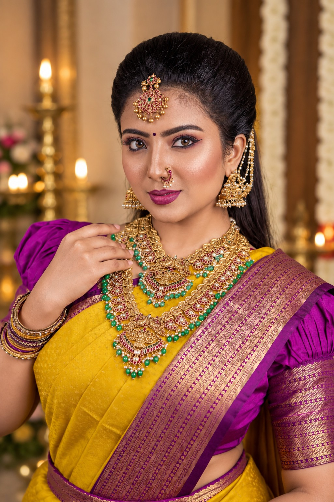
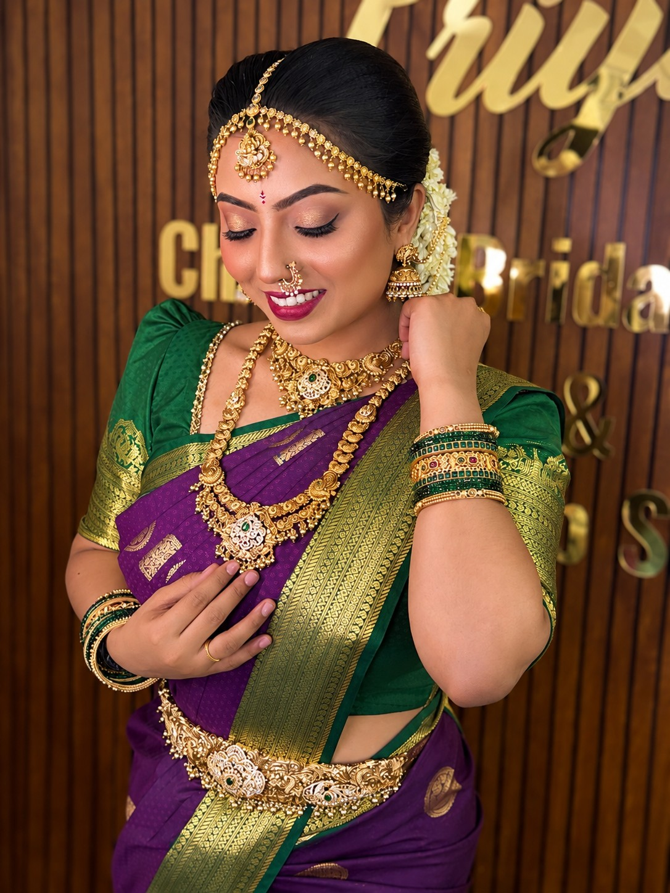
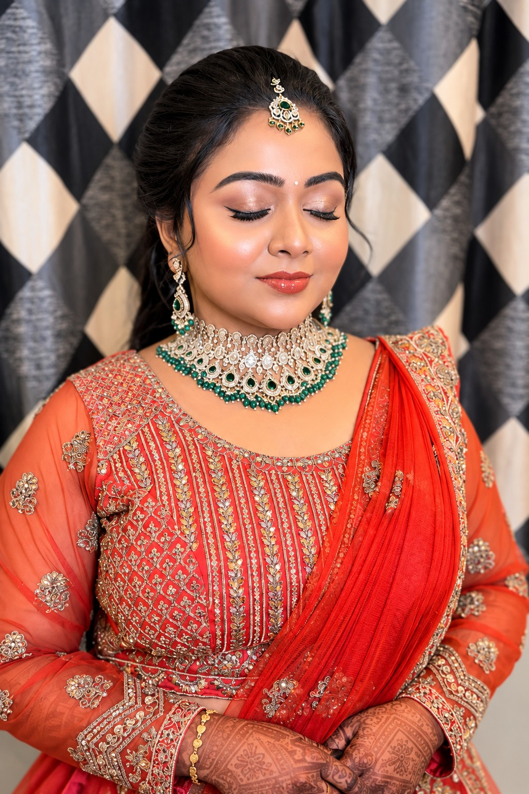
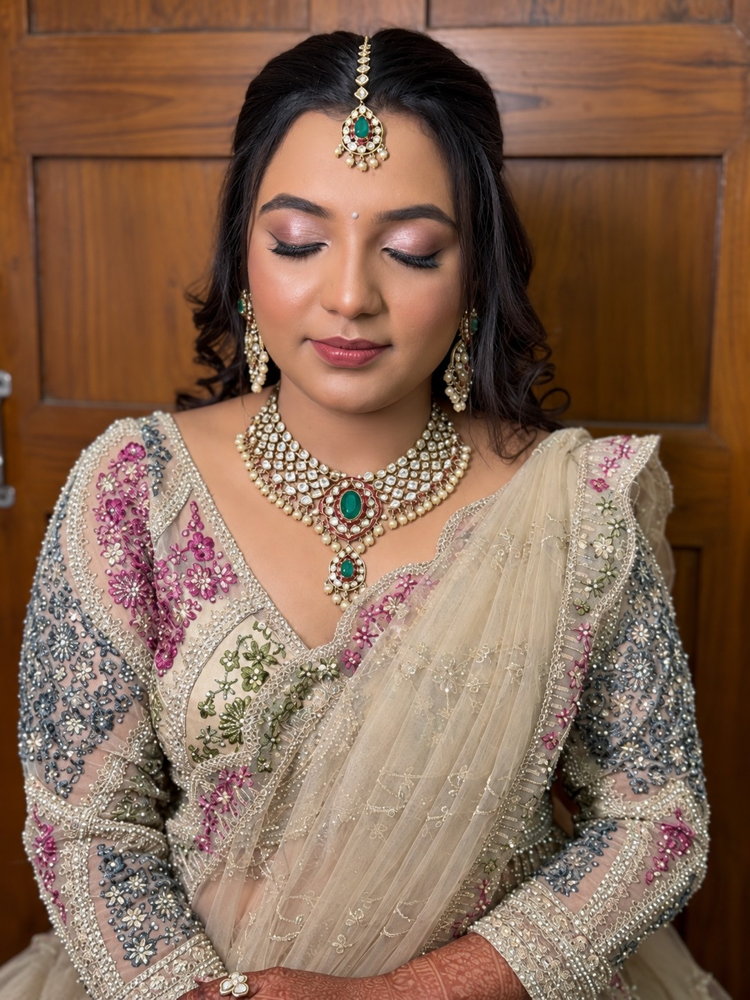
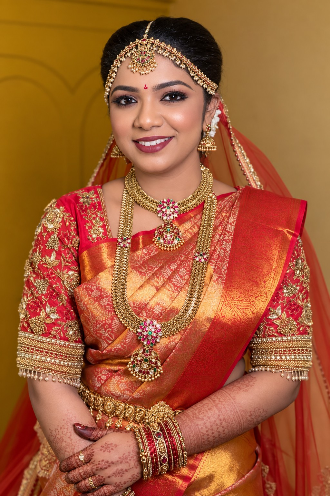
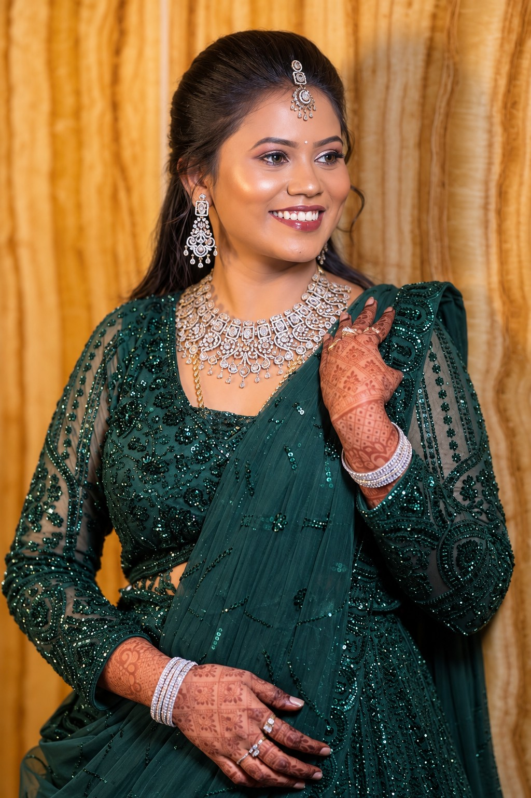
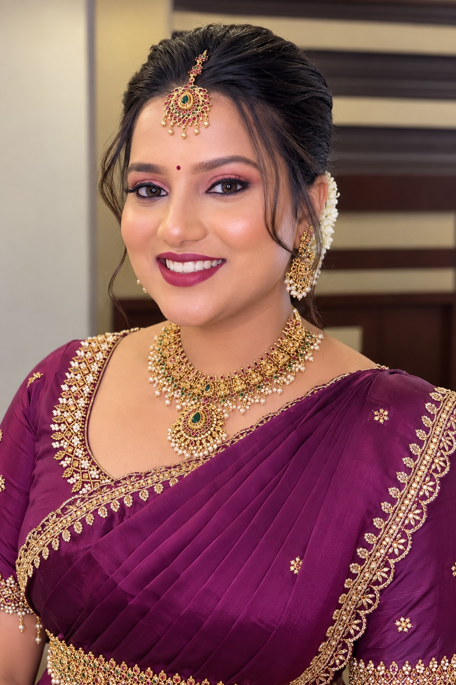

MAKEUP THAT FEELS
UNIQUE YOU
FOUNDER
PRIYA
RAVIKUMAR



















MAKEUP THAT FEELS
UNIQUE YOU
FOUNDER










EXPERIENCE, IN EVERY DETAIL
With 12 years of experience in the makeup industry, Priya Ravikumar is known for creating long-lasting, flawless and camera-friendly bridal looks with a strong focus on quality and client satisfaction.
Every look is carefully customized to suit the bride’s features, personality and occasion. With years of experience, a strong portfolio and numerous positive client reviews, Priya believes in maintaining professional standards from consultation to the final look.
Experience • Quality • Long-lasting Makeup • Professionalism • Client Satisfaction 🤍
THE BRANDS BEHIND THE FINISH
Only premium international makeup brands are carefully selected and used to create a refined, high-performance makeup experience. Each product is chosen for its quality, texture, longevity, finish and ability to deliver consistent, camera-ready results.
Dior • Chanel • Estée Lauder • Lancôme • MAC Cosmetics • NARS • Bobbi Brown • Make Up For Ever • Huda Beauty • Charlotte Tilbury • Fenty Beauty • Rare Beauty • Giorgio Armani Beauty • YSL Beauty • Hourglass • Laura Mercier • Anastasia Beverly Hills • Too Faced • Benefit Cosmetics • Urban Decay • Tarte • Natasha Denona • Pat McGrath Labs • Kryolan
Curated globally. Professionally selected. Crafted for premium-quality results. ✨
HYGIENE & SANITATION
Hygiene is an essential part of every makeup service we provide. All makeup tools, brushes, equipment and frequently handled kit components are thoroughly cleaned and properly sanitized before every client, ensuring a fresh and hygienic setup for each appointment.
We follow strict hygiene practices throughout every session, with clean tools, sanitized equipment and carefully maintained makeup kits to provide our clients with a safe, comfortable and premium makeup experience.
BOOK AN APPOINTMENT →